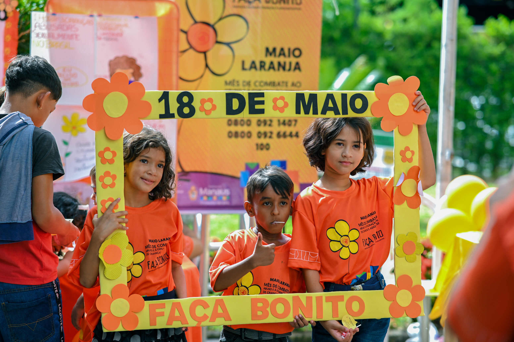

A cada quatro casos de violência sexual no Brasil, em três a vítima é criança ou adolescente.
O Maio Laranja é o mês dedicado ao combate ao abuso sexual de crianças e adolescentes no Brasil.
O objetivo da campanha é mobilizar, sensibilizar, informar e convocar toda a sociedade a participar da defesa dos direitos de crianças e adolescentes.

via informemanaus
Em 2022, aproximadamente 73% dos casos de estupro reportados tinham como vítima pessoas abaixo de 20 anos.
A maioria dos estupros contra crianças e adolescentes são cometidos por familiares ou conhecidos, sendo que 61,7% dos casos ocorrem dentro das residências das vítimas.
Disque 100
Se notar algo suspeito, não hesite em ligar.
Este número é um canal brasileiro de denúncias gratuito e anônimo, onde qualquer pessoa pode reportar casos de violência, maus-tratos e exploração sexual contra crianças e adolescentes.